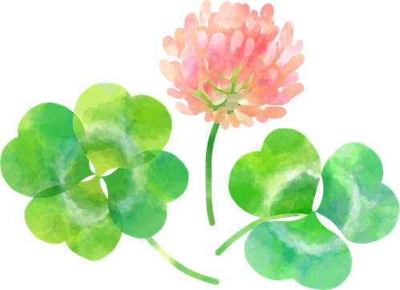
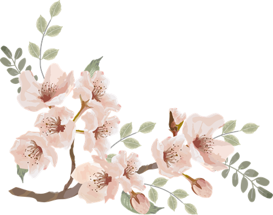

ONE DAY
在学生の1日
人間科学部 心理学科 2年 Dさん（仮名）のある水曜日。
-
{{ t.time }}
{{ t.title }} {{ t.text }}
STUDENT VOICE
在学生の声
-
「{{ s.quote }}」
{{ s.text }}
{{ s.who }}（仮名）

CLUBS
クラブ・サークル
{{ c.cat }}
- {{ i }}

EVENTS
1年間の行事
-
{{ s.name }}
- ・{{ i }}

SUPPORT
学生生活のサポート
-
{{ s.title }}
{{ s.text }}